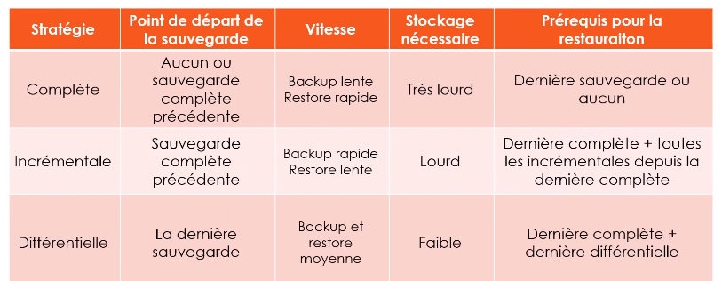
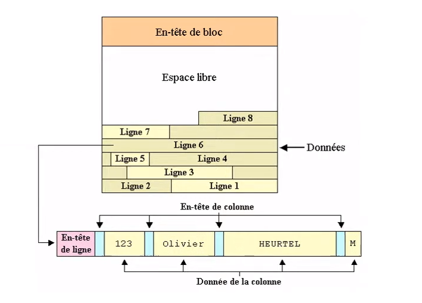
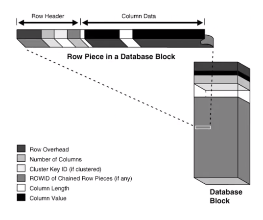
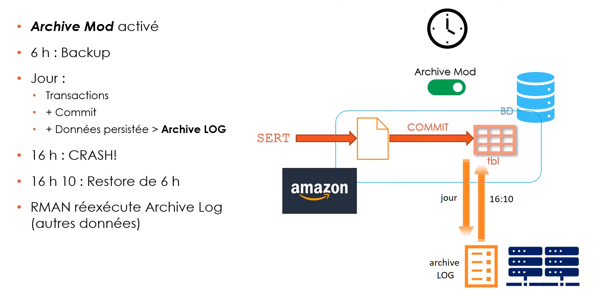

Outils les plus utilisé
- RMAN
- Gestiionnaire de SAuvegarde BD
- SQL * Loader
- Importation de données
- DATA Pump
- Nouvel Outil
- Importation et exportation des objets (telque les table) Anisi que les données
- Dsposer d'une sauvegarde fiable est sûre pour éviter la perte de données
- Cause de pertes de données :
- Un crash matériel
- une Mauvaise manipulation de données
- virus ( corruption de données )
-
1 . RMAN
-
Recovery Manager
- Installer avec la BD Oracle
- Effectue des tâches de sauvegarde et de restauration de BD
- Automatise l'administration de vos stratégie de sauvegarde
- Le plus utilisé pour sauvegarde quotidiennes
- Permets au BDA de gérer des sauvegardes de manière souple et optimisée
-
Ce qui est sauvegardé
RMAN Permet de réaliser des sauvegardes :
- globales de la BD
- tablespace : espaces disque logiques
- datafiles : fichiers de données
- controlfiles : fichiers de contrôle
- archivelog : journaux de transactions
-
RMAN sauvegarde les données par bloc de données
- La BD Oracle utilise la métadonnées rowid pour identifier de manière unique une line dans un bloc de données
- les rowid est une structure qui contien les informations dont la base de données a besoin pour accèder à une ligne
-
SELECT ROWID FROM employees WHERE employee_id = 100 ;
-
Types de sauvegarde classique
- complète : on sauvegarde toutes les données
- Incrémentielle : on sauvegarde uniquement les données
modifiées..
- Differentielle : depuis la dernière sauvegarde complète
- Incrémentielle (cumulative) depuis la dernière sauvegarde quel que soit son type
-
1 - La stratégie de sauvegarde
2 - Comparaison des types de sauvegardes
 -
Modes ARCHIVE vs NO ARCHIVE
-
ARCHIVE
Objectif principal: Permettre la récupération à un point antérieur dans le temps.
Espace disque: Requiert plus d'espace pour stocker les journaux d'archivage.
Opérations: Supporte les opérations de sauvegarde en ligne et permet la création de bases de données en standby.
Durabilité: Convient aux applications nécessitant une haute disponibilité et une protection contre la perte de données.
-
NO ARCHIVE
Objectif principal: Optimisé pour des performances maximales sans récupération point-in-time.
Espace disque: Utilise moins d'espace disque car il n'y a pas de journaux d'archivage.
Opérations: Ne supporte pas les opérations de sauvegarde en ligne ni la création de bases de données en standby.
Durabilité: Plus exposé aux risques de perte de données car il n'y a pas de traçabilité des transactions passées.
-
Choisir entre les deux modes dépend largement de vos besoins en matière de
disponibilité,
de récupération et de performance.
-
-
-
2 . SQL * Loader
- Chargement de données:
SQL*Loader peut charger des données à partir de différents formats de fichiers tels que les fichiers texte délimités, CSV,
les fichiers de longueur fixe, etc. - Transformation de données:
Il offre la possibilité de manipuler les données avant leur insertion dans la base de données.
Par exemple, convertir des chaînes de caractères en majuscules ou en minuscules, diviser ou combiner des colonnes, etc. - Gestion des erreurs:
SQL*Loader permet de spécifier un nombre maximal d'erreurs avant de s'arrêter.
Les enregistrements erronés peuvent être sauvegardés dans un fichier d'erreurs pour analyse.
Pour exécuter SQL*Loader, vous avez généralement besoin de trois fichiers:
- Fichier de données contient les données à charger.
- Fichier de contrôle spécifie le format des fichiers de données et les mappages de colonnes.
- Fichier de paramètres Ce fichier spécifie des paramètres de chargement pour SQLLoader
qui ne sont pas toujours faciles à transmettre via la ligne de commande.
Exemple
-
Fichier de données (persons.dat):
John,Smith,30 Jane,Doe,25 -
Fichier de contrôle (persons.ctl):
LOAD DATA INFILE 'persons.dat' INTO TABLE users FIELDS TERMINATED BY ',' ( first_name CHAR(50), last_name CHAR(50), age INTEGER ) -
Fichier de paramètres (persons.par):
USERID=username/password@db CONTROL=persons.ctl LOG=load.log BAD=bad_records.bad DATA=persons.dat ERRORS=100 DIRECT=TRUE
Execution avec le fichier de paramètres:
sqlldr persons=persons.par - Chargement de données:
-
3. Oracle Data Pump
Oracle Data Pump est un utilitaire fourni par Oracle qui permet d'importer et d'exporter des données entre des BD Oracle.
Contrairement à SQL*Loader qui est principalement utilisé pour charger des données à partir de fichiers externes,
Data Pump est utilisé pour migrer des données entre BD, y compris les métadonnées. Il remplace les anciens utilitaires exp et imp.doit être exécutée en tant que SYSDBA
-
1. Principales commandes:
- expdp: Exporte des données et des métadonnées à partir d'une base de données Oracle.
- impdp: Importe des données et des métadonnées dans une base de données Oracle.
-
2. Utilisation de base:
-
Export avec Data Pump (expdp):
Pour exporter une table entière:
expdp username/password@db schemas=SCHEMA_NAME directory=DIR_NAME dumpfile=export.dmp logfile=export.log-
schemas: Nom du schéma à exporter.
directory: Nom de l'objet DIRECTORY Oracle où les fichiers seront créés.
dumpfile: Nom du fichier dump créé.
logfile: Nom du fichier journal pour l'exportation.
-
Import avec Data Pump (impdp):
Pour importer une table entière:
impdp username/password@db schemas=SCHEMA_NAME directory=DIR_NAME dumpfile=export.dmp logfile=import.log
-
-
3. Exemples avancés:
Exporter certaines tables:
expdp username/password@db tables=SCHEMA_NAME.TABLE_NAME1,SCHEMA_NAME.TABLE_NAME2 directory=DIR_NAME dumpfile=export_tables.dmp logfile=export_tables.logExporter avec des requêtes:
Pour exporter uniquement les lignes d'une table répondant à une condition particulière:
expdp username/password@db tables=SCHEMA_NAME.TABLE_NAME query=\"WHERE condition\" directory=DIR_NAME dumpfile=export_query.dmp logfile=export_query.logRemappage lors de l'import:
Si vous souhaitez remapper un schéma source vers un schéma cible:
impdp username/password@db remap_schema=SOURCE_SCHEMA:TARGET_SCHEMA directory=DIR_NAME dumpfile=export.dmp logfile=import_remap.log
-
-
4. Conseils:
Assurez-vous d'avoir créé un objet DIRECTORY Oracle correspondant à un répertoire physique sur
le serveur de base de données.
Les droits appropriés doivent être accordés à l'utilisateur pour accéder à cet objet DIRECTORY.
Oracle Data Pump est multithreaded et est donc souvent plus rapide que les anciens utilitaires exp et imp.


